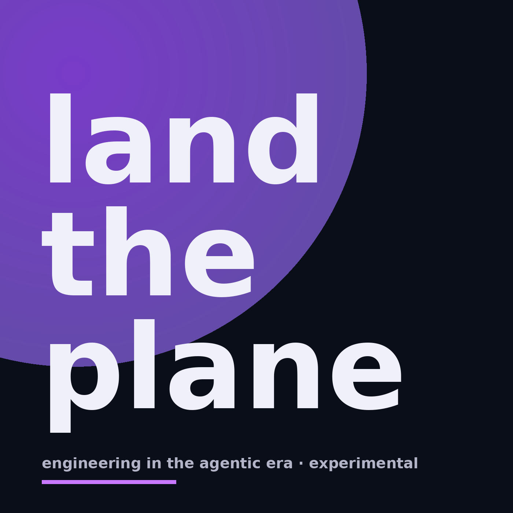

Software engineering, AI-assisted development, and what it actually takes to lead engineering teams in the agentic era.
Intent, agents, and the coming reshape of engineering work.
Karpathy moves to Anthropic, GitHub Spec Kit reframes the source of truth, and Thoughtworks warns about cognitive debt. The main piece argues that as agents take over the typing, three things get load-bearing in a way they never were before — capturing intent explicitly, refusing to pay the cargo cult tax, and treating psychological safety as a throughput argument rather than a soft skill.